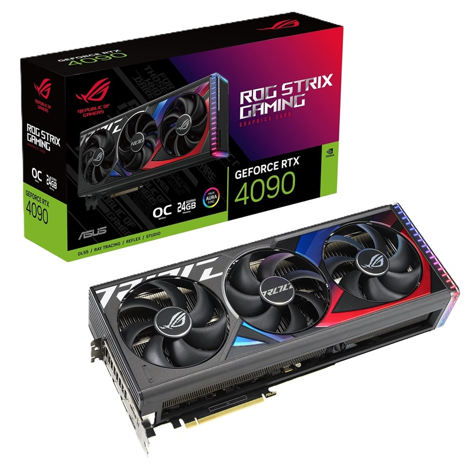
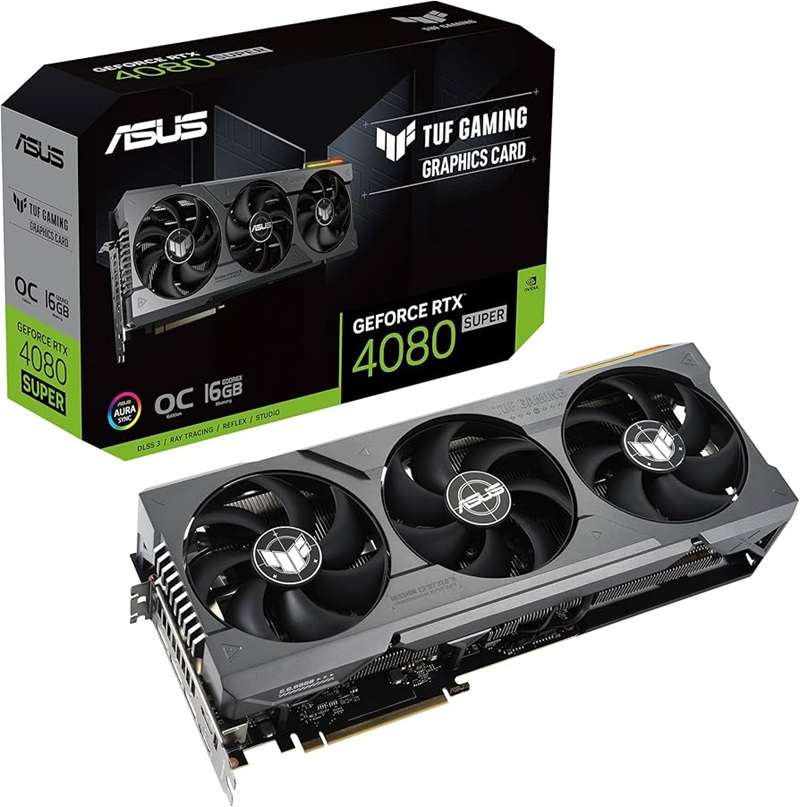
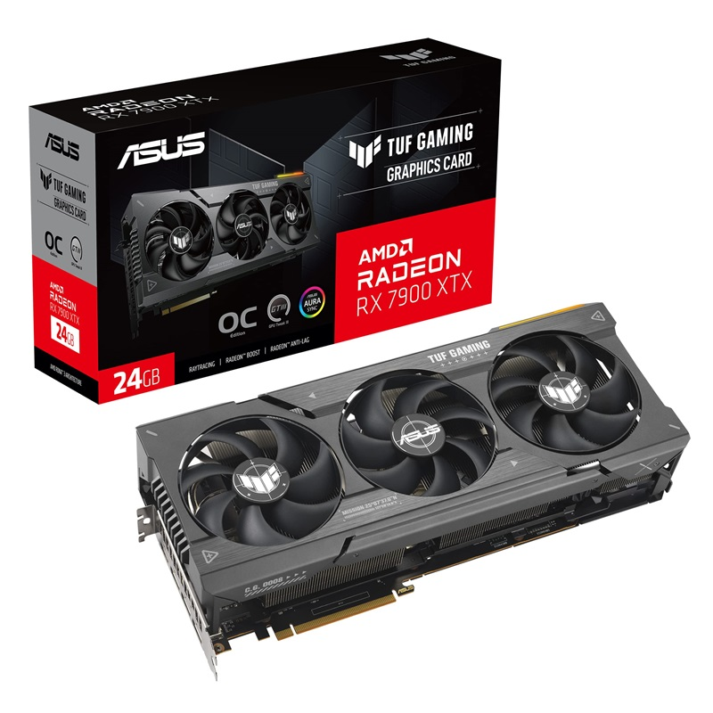
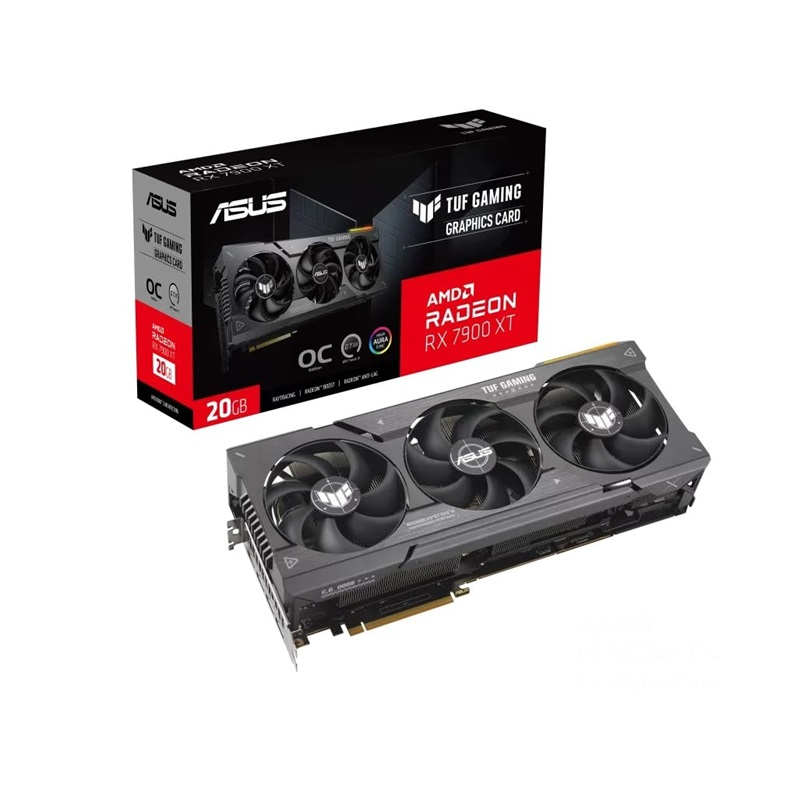

Nvidia 4090
The NVIDIA GeForce RTX 4090 is a powerhouse GPU, designed for gamers, creators, and professionals who demand cutting-edge performance. Built on NVIDIA's Ada Lovelace architecture, it delivers exceptional ray tracing, AI-driven features, and unprecedented speeds.
With a massive 24GB of GDDR6X memory and over 16,000 CUDA cores, the RTX 4090 excels in 4K gaming, real-time 3D rendering, and complex AI workloads. Its advanced DLSS 3 technology enhances visual fidelity while maintaining smooth frame rates, making it one of the most advanced graphics cards on the market.
Nvidia 4080 Super
The NVIDIA GeForce RTX 4080 SUPER, launching on January 31, 2024, brings enhanced performance to the RTX 40 series lineup. With 10,240 CUDA cores, a 256-bit memory bus, and 16GB of ultra-fast GDDR6X VRAM running at 23 Gbps, it delivers a memory bandwidth of 736.3 GB/s.
This card offers a significant boost in performance, being 1.4x faster than the RTX 3080 Ti in demanding games without frame generation, and 2x faster with DLSS 3 enabled. It excels at 4K gaming with ray tracing and supports advanced generative AI and productivity applications.
AMD 7900 XTX
The AMD Radeon RX 7900 XTX is a flagship GPU from AMD’s RDNA 3 lineup, aimed at high-end gaming and productivity tasks. Featuring 24GB of GDDR6 memory and a 384-bit memory interface, it provides a competitive alternative to NVIDIA’s higher-end RTX GPUs, particularly excelling in high-resolution gaming up to 4K.
The RX 7900 XTX also boasts 96 compute units and advanced ray tracing capabilities, making it well-suited for visually demanding games and creative applications. Its energy efficiency and price point offer strong value, positioning it as a top choice for gamers who want powerful performance without the premium of the highest-tier NVIDIA options.
AMD 7900 XT
The AMD Radeon RX 7900 XT is a high-performance GPU built on AMD’s RDNA 3 architecture, offering a strong balance of power and efficiency. With 20GB of GDDR6 memory and a 320-bit memory interface, it handles 4K gaming well and supports ray tracing, making it a solid choice for gamers and creators alike.
Slightly more affordable than the RX 7900 XTX, the 7900 XT is ideal for users who want high-resolution graphics and powerful rendering capabilities without the absolute top-tier price. It’s a competitive option for those looking for robust performance in both gaming and productivity tasks, especially compared to NVIDIA’s similarly priced alternatives.